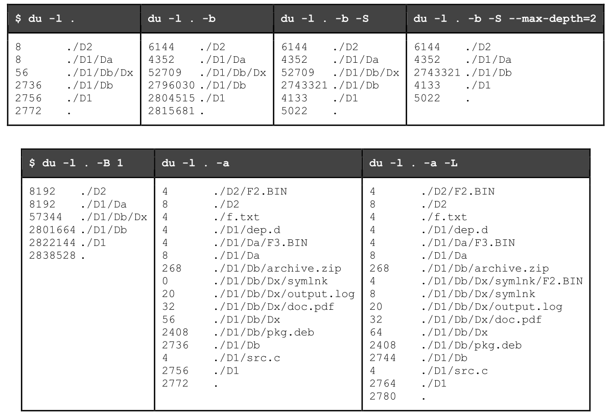

SOPE PROJECT
Sumário
Pretende-se desenvolver uma ferramenta para sumariar a utilização de espaço em disco de um ficheiro ou diretório. No caso de um diretório, a informação a disponibilizar deve contemplar ficheiros e subdiretórios que, eventualmente, nele estejam contidos.
A ferramenta a desenvolver ,simpledu, deve ter como referência o comando du - estimate file space usage, o qual apresenta informação sobre o espaço em disco utilizado por ficheiros e diretórios.
Deve tentar-se reproduzir a informação apresentada pelo comando du correntemente instalado. Por omissão, o comando du:
- apresenta o espaço ocupado em número de blocos de 1024 bytes;
- apenas lista diretórios;
- não segue links simbólicos,contabiliza uma única vez cada ficheiro;
- apresenta de forma cumulativa o tamanho de subdiretórios e ficheiros incluídos;
- não restringe os níveis de profundidade na estrutura de diretórios.
Esta forma de operação deve ser reproduzida pela ferramenta simpledu, mas considerando apenas um subconjunto das opções de invocação disponibilizadas pelo comando du:
-a , --all– a informação exibida diz respeito também a ficheiros;-b , --bytes– apresenta o número real de bytes de dados (ficheiros) ou alocados (diretórios);-B , --block-size=SIZE– define o tamanho (bytes) do bloco para efeitos de representação;-l , --count-links– contabiliza múltiplas vezes o mesmo ficheiro;-L , --dereference– segue links simbólicos;-S , --separate-dirs– a informação exibida não inclui o tamanho dos subdiretórios;--max-depth=N– limita a informação exibida a N (0,1, ...) níveis de profundidade de diretórios.
Não se pretende que seja mantido um registo dos ficheiros ou diretórios já processados (por exemplo, para evitar a sua contabilização por múltiplas vezes ou para impedir a existência de ciclos através de links simbólicos), por isso, deve ser assumido que a opção -l (ou --count-links) é sempre usada.
NOTAS:
- Cada processo deve analisar somente um diretório e é responsável por criar um processo por cada um dos subdiretórios que, eventualmente, nele possam estar contidos.
- O tamanho dos blocos usados num dado disco, disponível no campo
st_blksizeda estruturastat (struct stat), pode ser também obtido usando o comando$ stat -f fich_dir
Comando du


Requisitos Funcionais
simpledu -l [path] [-a] [-b] [-B size] [-L] [-S] [--max-depth=N]
Apesar de ser referida apenas uma alternativa por opção de invocação, caso exista uma segunda, a implementação da ferramenta deve suportar ambas (por exemplo, -a ou --all). Por questões de simplicidade, não é requerido que múltiplas opções possam ser especificadas usando um único argumento (por exemplo, -LabS).
O processo-pai (primeiro a ser executado) deve sempre aguardar pela terminação de todos os processos-filho antes de terminar a sua execução (ver requisitos arquiteturais).
Apresentação de resultados
Ter em atenção a existência de um caráter de tabulação entre o número de bytes ou blocos e o caminho para o ficheiro ou diretório.
Exemplo:

Registo/Logs
Criar e Usar a variável de ambiente LOG_FILENAME para guardar o path do ficheiro de logs que será escrito por todos os processos.
Qualquer um dos processos participantes na operação do programa acede ao ficheiro, acrescentando-lhe informação, linha a linha, no seguinte formato:
instant – pid – action – info
- instant é o instante de tempo imediatamente anterior ao registo, medido em milissegundos e
com 2 casas decimais, tendo como referência o instante em que o programa começou a executar; - pid é o identificador do processo que faz o registo da linha, com espaço fixo para 8 algarismos;
- action é a descrição do tipo de evento:
CREATE, EXIT, RECV_SIGNAL, SEND_SIGNAL, RECV_PIPE, SEND_PIPE e ENTRY; - info é a informação adicional para cada uma das ações:
- CREATE – os argumentos da linha de comandos;
- EXIT – o código de saída (exit status);
- RECV_SIGNAL – o sinal recebido (por exemplo, SIGINT);
- SEND_SIGNAL – o sinal enviado seguido do pid do processo a quem se destina;
- RECV_PIPE – a mensagem enviada;
- SEND_PIPE – a mensagem recebida;
- ENTRY – número de bytes (ou blocos) seguido do caminho.
Interrupção pelo utilizador
Estando a ferramenta simpledu em execução, quando for enviado o sinal SIGINT (CTRL+C), todo o programa deve suspender a sua operação, incluindo todos processos associados, e ser apresentada uma mensagem de confirmação ao utilizador para a terminação do mesmo. Caso o utilizador confirme a intenção de terminar o programa, devem ser terminadas quaisquer operações que possam estar pendentes antes da saída; caso o utilizador pretenda continuar a execução do programa, as operações devem ser retomadas imediatamente.
o processo-pai deve enviar um sinal SIGSTOP a todos os processos-filho que estiverem em execução quando receber um sinal SIGINT; o envio do sinal seguinte depende da confirmação (SIGTERM) ou não (SIGCONT) por parte do utilizador relativamente à terminação do programa.
Requisitos Arquiteturais
- Cada um dos subdiretórios que, eventualmente, nele possam estar contidos; os argumentos que lhe são passados devem ser ajustados para que o caminho (
path) e o nível máximo de profundidade (--max-depth) reflitam o pretendido; - O processo-pai (primeiro a ser executado) deve sempre aguardar pela terminação de todos os processos-filho antes de terminar a sua execução;
- usar o mesmo código (sem alterações) independentemente de ser ou não o processo principal;
- o tamanho total de cada um dos subdiretórios deve ser comunicado ao processo-pai através de um pipe (sem nome) criado para cada um dos processos-filho;
Plano de Trabalho
Descrito nas especificações do Projeto
No sentido de tornar o desenvolvimento da ferramenta simpledu mais modular, é sugerido que o desenvolvimento seja feito de acordo com os seguintes passos:
- Receber, processar e guardar os argumentos da linha de comandos e as variáveis de ambiente;
- Adicionar as mensagens de registo à medida que forem implementadas novas funcionalidades e validar a correção de ambas;
- Começar por escolher apenas ficheiros e apresentar a informação pretendida (bytes e blocos);
- Considerar que a opção
-L (ou --dereference)está ativa para não ser necessário distinguir links simbólicos de ficheiros regulares.
- Considerar que a opção
- Fazer a distinção entre ficheiros e links simbólicos e apresentar resultados distintos em função da opção
-L; - Considerar entradas que sejam diretórios, mas limitar a análise a um nível
(--max-depth=1); - Criar um novo processo por subdiretório e tentar passar-lhe os argumentos corretos;
- Os argumentos serão os mesmos exceto o caminho
(path/entry)e, eventualmente, o nível máximo de profundidade permitido(--max-depth=N-1); - Assumir que a opção
-S (ou --separate-dirs)está ativa para que não seja necessário considerar cumulativamente o tamanho dos subdiretórios.
- Os argumentos serão os mesmos exceto o caminho
- Criar pipes para comunicar o tamanho de um dado subdiretório ao processo-pai e assim apresentar corretamente resultados cumulativos, incluindo para subdiretórios.
Testar
Considerando um teste T definido por um conjunto de argumentos arg1, arg2, ..., argN, o sucesso ou insucesso de um determinado teste será determinado pelo seguinte conjunto de comandos:
$ (./simpledu <arg1 args2 ... argN> || echo $?) | sort -k2 > testeT_simpledu.txt $ (du <arg1 args2 ... argN> || echo $?) | sort -k2 > testeT_du.txt $ diff -q testeT_simpledu.txt testeT_du.txt > /dev/null 2>&1 && echo OK || echo FAILED
O resultado será OK ou FAILED.
Os argumentosarg1 args2 ... argN, obviamente, devem ser substituídos pelos argumentos pretendidos (por exemplo,../my_test_folder/ -l -S).
Tarefas
NOTA: As seguintes sugestões foram dadas por mim - Eduardo Brito - estando pendentes de revisão e modificação.
- Criar um
Makefilepara o projeto e habilitar a sua utilização - Criar o ficheiro
proj.csimpledu -l [path] [-a] [-b] [-B size] [-L] [-S] [--max-depth=N]-
Fazer Parse dos argumentos da linha de comandos e variávies de ambiente
-
Com base nos respetivos argumentos, definir as tarefas a realizar
- Cada opção ativa uma flag numa máscara relacionada com as tarefas, e a função responsável por obter a informação dos ficheiros/diretórios recorre sempre a essa máscara para saber o que procurar e como procurar.
Exemplo para a máscara de bits:
1 X X X size X X max-depth -l -a -b -B int -L -S int - X representa 1 ou 0 conforme a opção foi ativada ou não pelo utilizador
- max-depth diminui ao entrar em cada subdiretório
- existirá também uma variável para o path que muda ao entrar em cada subdiretório
- Cada opção ativa uma flag numa máscara relacionada com as tarefas, e a função responsável por obter a informação dos ficheiros/diretórios recorre sempre a essa máscara para saber o que procurar e como procurar.
-
Começar a preparar uma função para registar os Logs de cada processo -
LOG_FILENAMEserá a variável de ambiente que guardará o nome do ficheiro. -
Criar e registar um Handler para
SIGINTque trata da ação do utilizador quando é recebido umCtrl-C
o processo-pai deve enviar um sinal SIGSTOP a todos os processos-filho que estiverem em execução quando receber um sinal SIGINT; o envio do sinal seguinte depende da confirmação (SIGTERM) ou não (SIGCONT) por parte do utilizador relativamente à terminação do programa.
- Na pasta test da raíz deste repositório, criar um/vários diretório(s) com ficheiros e subdiretórios aleatórios, para ser possível testar os resultados.
- Acrescentar ou modificar estas tarefas/sugestões
-